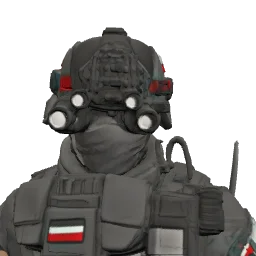

1 JAN 1936
Paused
4,623+135

Marshal · Poland
Telegram · Signal Corps PriorityMobilisation ordered
Drag to pan · scroll to zoom · click a unit to select · shift-drag to box select · right-click to move · Space pauses ·
WW2044 · Total War · Poland 1936 · classified
Poland Is Not Yet Lost!
Painting the map…
← Back to Total War